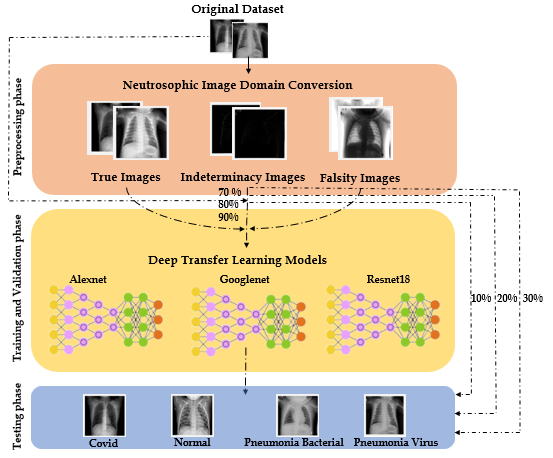
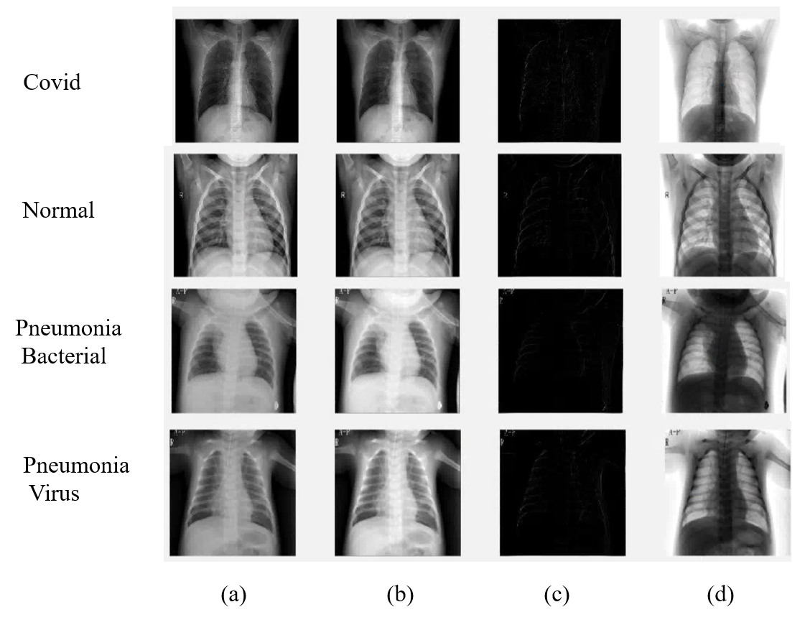

A Study of the Neutrosophic Set Significance on Deep Transfer Learning Models: An Experimental Case on a Limited COVID-19 Chest X-Ray Dataset
Abstract
Coronavirus, also known as COVID-19, has spread to several countries around the world. It was announced as a pandemic disease by The World Health Organization (WHO) in 2020 for its devastating impact on humans. With the advancements in computer science algorithms, the detection of this type of virus in the early stages is urgently needed for the fast recovery of patients. In this paper, a study of neutrosophic set significance on deep transfer learning models will be presented. the study will be conducted over a limited COVID-19 x-ray. The study relies on neutrosophic set and theory to covert the medical images from the grayscale spatial domain to the neutrosophic domain. The neutrosophic domain consists of three types of images and they are, the True (T) images, the Indeterminacy (I) images, and the Falsity (F) images. The dataset used in this research has been collected from different sources as there is no benchmark dataset for COVID-19 chest X-ray until the writing of this research. The dataset consists of four classes and they are COVID-19, Normal, Pneumonia bacterial, and Pneumonia virus. This study aims to review the effect of neutrosophic sets on deep transfer learning models. The selected deep learning models in this study are Alexnet, Googlenet, and Restnet18. Those models are selected as they have a small number of layers on their architectures. To test the performance of the conversion to the neutrosophic domain, more 36 trails have been conducted and recorded. A combination of training and testing strategies by splitting the dataset into (90%-10%, 80%-20%,70%-30) is included in the experiments. Four domains of images are tested, and they are, the original domain, the True (T) domain, the Indeterminacy (I) domain, and the Falsity (F) domain. The four domains with the different training and testing strategies were tested using the selected deep transfer models. According to the experimental results, the Indeterminacy (I) neutrosophic domain achieves the highest accuracy possible in the testing accuracy and performance metrics such as Precision, Recall, and F1 Score. The study concludes that using the neutrosophic set with deep learning models may be an encouraging transition to achieve better testing accuracy, especially with limited COVID-19 datasets.
 Dataset
Download dataset from Kaggle
Reference
Khalifa, N.E.M., Smarandache, F., Manogaran, G. et al. A Study of the Neutrosophic Set Significance on Deep Transfer Learning Models: an Experimental Case on a Limited COVID-19 Chest X-ray Dataset. Cogn Comput (2021). https://doi.org/10.1007/s12559-020-09802-9